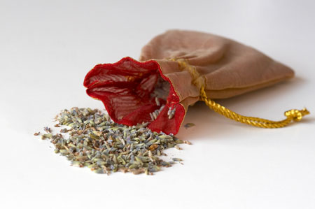

Here are 15 homemade holiday gift ideas to craft or assemble forfamily and friends this holiday season:
? Craft personalized greeting cards: use card stock, available fromany office supply store and add your favorite photographs, usedgreeting cards or magazine photos.
? Create themed scrapbooks depicting a favorite vacation, holidayor family celebration.
? Write and illustrate handmade books: Use your imagination towrite stories based on personal experiences and adventures.Illustrate the book with photos, magazine pictures or your ownhand-drawn illustrations.
? Make home-brewed soda, cider, beer or wine, or give a brewingkit. To learn how, readBrew Better Soda At Home in the December/January 2005 issue ofMother Earth News.
? Simmer some mulled wine or spiced cider for a warm holidaydrink.
? Make flavored vinegars using your favorite herbs or fruits.
? Spread cheer with your homemade jam, jelly, butters orbreads.
? Share your garden's bounty by giving braided garlic or onionropes.
? Go Italian with homemade pesto, frozen in ice cube trays.
? Create small sachet bags and fill with dried lavender.
? Tie bunches of dried herbs with a colorful ribbon and add somedried red peppers for accent color.
? Fashion a seasonal wreath from dried leaves, seed pods andevergreen boughs.
? Create 'floral' arrangements of fresh evergreen branches, rosehips and bittersweet vines.
? Tie small kindling bundles of finely split aromatic wood, such aspine or cedar, with red or green cord and arrange in a basket withhandles.
? Assemble windowsill garden kits with several attractive smallflowerpots, a bag of potting soil and seeds for basil, chives, dillor other popular kitchen herbs.
|
 A homemade lavender sachet makes a great holiday gift. |
|
|